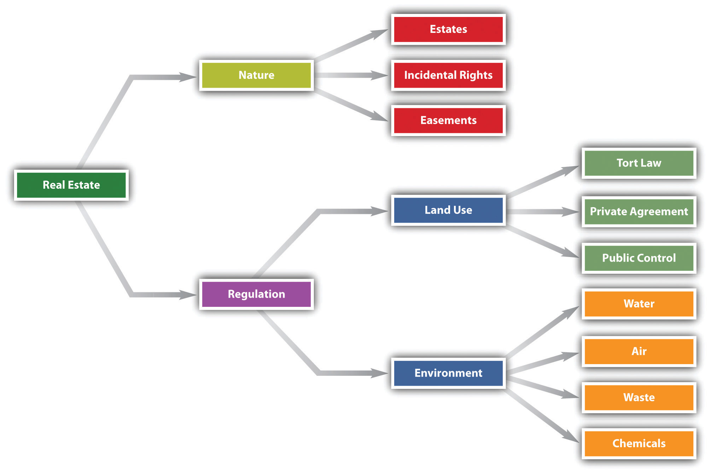

In property law, an estate is an interest in real property, ranging from absolute dominion and control to bare possession. Ordinarily when we think of property, we think of only one kind: absolute ownership. The owner of a car has the right to drive it where and when she wants, rebuild it, repaint it, and sell it or scrap it. The notion that the owner might lose her property when a particular event happens is foreign to our concept of personal property. Not so with real property. You would doubtless think it odd if you were sold a used car subject to the condition that you not paint it a different color—and that if you did, you would automatically be stripped of ownership. But land can be sold that way. Land and other real property can be divided into many categories of interests, as we will see. (Be careful not to confuse the various types of interests in real property with the forms of ownership, such as joint tenancy. An interest in real property that amounts to an estate is a measure of the degree to which a thing is owned; the form of ownership deals with the particular person or persons who own it.)
Figure 28.1 Chapter Overview
The common law distinguishes estates along two main axes: (1) freeholds versus leaseholds and (2) present versus future interests. A freehold estateAn interest in land that has an uncertain duration. is an interest in land that has an uncertain duration. The freehold can be outright ownership—called the fee simple absolute—or it can be an interest in the land for the life of the possessor; in either case, it is impossible to say exactly how long the estate will last. In the case of one who owns property outright, her estate will last until she sells or transfers it; in the case of a life estate, it will last until the death of the owner or another specified individual. A leasehold estateAn estate whose termination date is usually known—a one-year lease, for example. is one whose termination date is usually known. A one-year lease, for example, will expire precisely at the time stated in the lease agreement.
A present estate is one that is currently owned and enjoyed; a future estate is one that will come into the owner’s possession upon the occurrence of a particular event. In this chapter, we consider both present and future freehold interests; leasehold interests we save for Chapter 32 "Landlord and Tenant Law".
The strongest form of ownership is known as the fee simple absoluteThe most extensive set of rights that can be conveyed in real property. (or fee simple, or merely fee). This is what we think of when we say that someone “owns” the land. As one court put it, “The grant of a fee in land conveys to the grantee complete ownership, immediately and forever, with the right of possession from boundary to boundary and from the center of the earth to the sky, together with all the lawful uses thereof.”Magnolia Petroleum Co. v. Thompson, 106 F.2d 217 (8th Cir. 1939). Although the fee simple may be encumbered by a mortgage (you may borrow money against the equity in your home) or an easement (you may grant someone the right to walk across your backyard), the underlying control is in the hands of the owner. Though it was once a complex matter in determining whether a person had been given a fee simple interest, today the law presumes that the estate being transferred is a fee simple, unless the conveyance expressly states to the contrary. (In her will, Lady Gaga grants her five-thousand-acre ranch “to my screen idol, Tilda Swinton.” On the death of Lady Gaga, Swinton takes ownership of the ranch outright in fee simple absolute.)
Not every transfer of real property creates a fee simple absolute. Some transfers may limit the estate. Any transfer specifying that the ownership will terminate upon a particular happening is known as a fee simple defeasibleAny transfer specifying that the ownership will terminate upon a particular happening.. Suppose, for example, that Mr. Warbucks conveys a tract of land “to Miss Florence Nightingale, for the purpose of operating her hospital and for no other purpose. Conveyance to be good as long as hospital remains on the property.” This grant of land will remain the property of Miss Nightingale and her heirs as long as she and they maintain a hospital. When they stop doing so, the land will automatically revert to Mr. Warbucks or his heirs, without their having to do anything to regain title. Note that the conveyance of land could be perpetual but is not absolute, because it will remain the property of Miss Nightingale only so long as she observes the conditions in the grant.
An estate measured by the life of a particular person is called a life estateAn estate measured by the life of a particular person. A conventional life estate is created privately by the parties themselves.. A conventional life estate is created privately by the parties themselves. The simplest form is that conveyed by the following words: “to Scarlett for life.” Scarlett becomes a life tenant; as such, she is the owner of the property and may occupy it for life or lease it or even sell it, but the new tenant or buyer can acquire only as much as Scarlett has to give, which is ownership for her life (i.e., all she can sell is a life estate in the land, not a fee simple absolute). If Scarlett sells the house and dies a month later, the buyer’s interest would terminate. A life estate may be based on the life of someone other than the life tenant: “to Scarlett for the life of Rhett.”
The life tenantSomeone who holds an estate in land for his or her life or the life of another. may use the property as though he were the owner in fee simple absolute with this exception: he may not act so as to diminish the value of the property that will ultimately go to the remainderman—the person who will become owner when the life estate terminates. The life tenant must pay the life estate for ordinary upkeep of the property, but the remainderman is responsible for extraordinary repairs.
Some life estates are created by operation of law and are known as legal life estates. The most common form is a widow’s interest in the real property of her husband. In about one-third of the states, a woman is entitled to dowerA statutory alternative to whatever is bequeathed in the will; the widow has the right to elect the share stated in the will or the share available under dower., a right to a percentage (often one-third) of the property of her husband when he dies. Most of these states give a widower a similar interest in the property of his deceased wife. Dower is an alternative to whatever is bequeathed in the will; the widow has the right to elect the share stated in the will or the share available under dower. To prevent the dower right from upsetting the interests of remote purchasers, the right may be waived on sale by having the spouse sign the deed.
To this point, we have been considering present estates. But people also can have future interests in real property. Despite the implications of its name, the future interest is owned now but is not available to be used or enjoyed now. For the most part, future interests may be bought and sold, just as land held in fee simple absolute may be bought and sold. There are several classes of future interests, but in general there are two major types: reversion and remainder.
A reversionA reversion arises whenever the estate transferred has a duration less than that originally owned by the transferor. arises whenever the estate transferred has a duration less than that originally owned by the transferor. A typical example of a simple reversion is that which arises when a life estate is conveyed. The ownership conveyed is only for the life; when the life tenant dies, the ownership interest reverts to the grantor. Suppose the grantor has died in the meantime. Who gets the reversion interest? Since the reversion is a class of property that is owned now, it can be inherited, and the grantor’s heirs would take the reversion at the subsequent death of the life tenant.
The transferor need not keep the reversion interest for himself. He can give that interest to someone else, in which case it is known as a remainderThe real property interest that remains after the life estate interest or other interest subject to defeasance. interest, because the remainder of the property is being transferred. Suppose the transferor conveys land with these words: “to Scarlett for life and then to Rhett.” Scarlett has a life estate; the remainder goes to Rhett in fee simple absolute. Rhett is said to have a vested remainder interest, because on Scarlett’s death, he or his heirs will automatically become owners of the property. Some remainder interests are contingent—and are therefore known as contingent remainder interests—on the happening of a certain event: “to my mother for her life, then to my sister if she marries Harold before my mother dies.” The transferor’s sister will become the owner of the property in fee simple only if she marries Harold while her mother is alive; otherwise, the property will revert to the transferor or his heirs. The number of permutations of reversions and remainders can become quite complex, far more than we have space to discuss in this text.
An estate is an interest in real property. Estates are of many kinds, but one generic difference is between ownership estates and possessory estates. Fee simple estates and life estates are ownership estates, while leasehold interests are possessory. Among ownership estates, the principal division is between present estates and future estates. An owner of a future estate has an interest that can be bought and sold and that will ripen into present possession at the end of a period of time, at the end of the life of another, or with the happening of some contingent event.